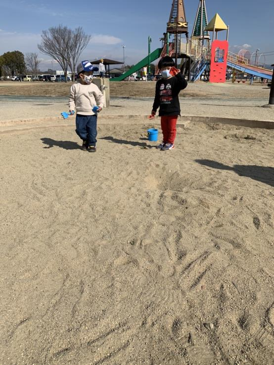
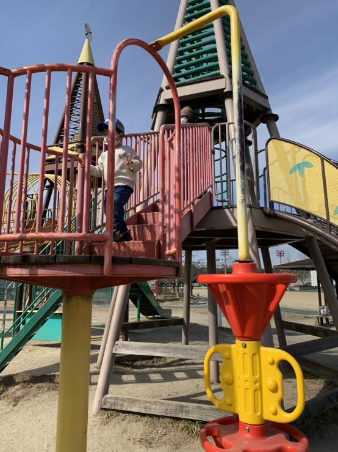

お友達
2022年2月8日
八幡市民スポーツ公園
 今度は保育園が休園（感染者が出たため）、3日連続で八幡市民スポーツ公園に。
淳紀は動物園に行きたい、（公園イヤ、お砂イヤ、ボールイヤ）言ったので、こども動物園（八幡市内）に連れて行った。
八幡市民は無料
Youtubeで、プテラノドンが入っていたドームと同じものがあり、淳紀は興味深く見ていた。
公園が隣接していて、横幅の大きい滑り台などで遊んだ。
一通り遊んだ後、「お砂する」と言い出したので、一旦家に帰って、砂場セットを取りに、そして、八幡市民スポーツ公園に。
写真の遊具に上りたがるので抱っこで上にあげてあげた。
すると、「お兄ちゃんがんばれ。できるよ。」と応援の声が。
淳紀と同じ年くらいの男の子（淳紀より3ヶ月年下）。一緒に遊ぶことに。ほとんどの時間、お友達と砂場で遊んだ。いい友達ができたね。